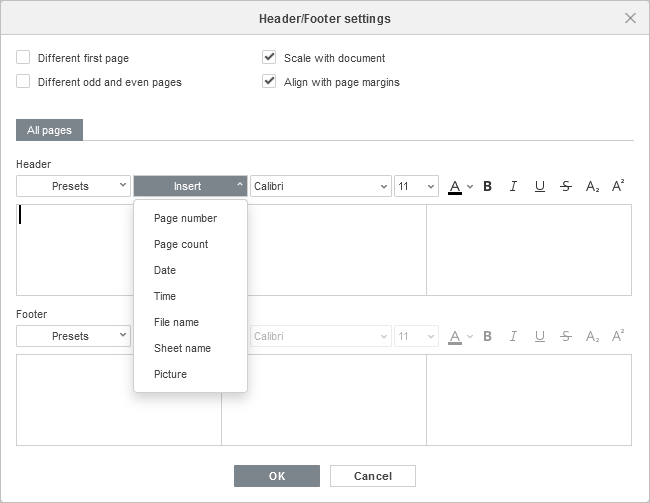

Umetanje zaglavlja i podnožja
Zaglavlja i podnožja omogućavaju dodavanje dodatnih informacija u odštampani radni list, kao što su datum i vreme, broj stranice, naziv lista itd. Zaglavlja i podnožja se prikazuju u štampanoj verziji tabele.
Da biste umetnuli zaglavlje ili podnožje u Spreadsheet Editor:
- pređite na karticu Insert ili Layout,
- kliknite na dugme Edit Header/Footer na gornjoj traci sa alatkama,
- otvoriće se prozor Header/Footer Settings, gde ćete moći da podesite sledeća podešavanja:
- označite polje Different first page da biste primenili drugačije zaglavlje ili podnožje na prvu stranicu ili ukoliko ne želite da dodate zaglavlje/podnožje na nju. Kartica First page će se pojaviti ispod.
- označite polje Different odd and even page da biste dodali različita zaglavlja/podnožja za neparne i parne stranice. Kartice Odd page i Even page će se pojaviti ispod.
- opcija Scale with document omogućava skaliranje zaglavlja i podnožja zajedno sa radnim listom. Ovaj parametar je podrazumevano omogućen.
- opcija Align with page margins omogućava poravnanje levog zaglavlja/podnožja sa levom marginom stranice i desnog zaglavlja/podnožja sa desnom marginom. Ova opcija je podrazumevano omogućena.

- unesite potrebne podatke. U zavisnosti od izabranih opcija, možete podesiti postavke za All pages ili zasebno podesiti zaglavlje/podnožje za prvu stranicu, kao i za neparne i parne stranice. Pređite na odgovarajuću karticu i prilagodite dostupne parametre. Možete koristiti jedan od unapred definisanih šablona ili ručno uneti potrebne podatke u levo, centralno i desno polje zaglavlja/podnožja:
- izaberite jedan od dostupnih šablona sa liste Presets: Page 1; Page 1 of ?; Sheet1; Confidential, dd/mm/yyyy, Page 1; Spreadsheet name.xlsx; Sheet1, Page 1; Sheet1, Confidential, Page 1; Spreadsheet name.xlsx, Page 1; Page 1, Sheet1; Page 1, Spreadsheet name.xlsx; Author, Page 1, dd/mm/yyyy; Prepared by Author dd/mm/yyyy, Page 1.
Odgovarajuće promenljive će biti dodate.
- postavite kursor u levo, centralno ili desno polje zaglavlja/podnožja i koristite listu Insert da biste dodali Page number, Page count, Date, Time, File name, Sheet name, Picture.
- izaberite jedan od dostupnih šablona sa liste Presets: Page 1; Page 1 of ?; Sheet1; Confidential, dd/mm/yyyy, Page 1; Spreadsheet name.xlsx; Sheet1, Page 1; Sheet1, Confidential, Page 1; Spreadsheet name.xlsx, Page 1; Page 1, Sheet1; Page 1, Spreadsheet name.xlsx; Author, Page 1, dd/mm/yyyy; Prepared by Author dd/mm/yyyy, Page 1.
- formatirajte tekst unet u zaglavlje/podnožje pomoću odgovarajućih kontrola. Možete promeniti podrazumevani font, njegovu veličinu i boju, primeniti stilove fonta kao što su podebljano, kurziv, podvučeno, precrtano, kao i koristiti indekse ili eksponente.
- kada završite, kliknite na dugme OK da biste primenili izmene.
Da biste izmenili dodata zaglavlja i podnožja, kliknite na dugme Edit Header/Footer na gornjoj traci sa alatkama, izvršite potrebne izmene u prozoru Header/Footer Settings i kliknite OK da biste sačuvali izmene.
Dodato zaglavlje i/ili podnožje biće prikazani u štampanoj verziji tabele.